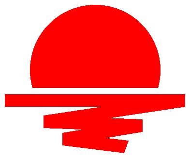
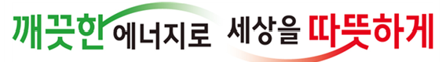

점검할 기기를 찾으면, 그 기기를 점검하려고 조작해야 할 차단기가 위치와 함께 나옵니다. 고른 사업장 것만 나옵니다.
검색 결과
0| 점검대상 | 조작대상(차단기명) | 조작 | 그룹 | 위치 | |
|---|---|---|---|---|---|
| 기기명을 찾아 보세요. | |||||
작업 리스트
0| No. | 점검대상 | 조작대상(차단기명) | 조작 | 그룹 | 위치 | 행 |
|---|


점검할 기기를 찾으면, 그 기기를 점검하려고 조작해야 할 차단기가 위치와 함께 나옵니다. 고른 사업장 것만 나옵니다.
| 점검대상 | 조작대상(차단기명) | 조작 | 그룹 | 위치 | |
|---|---|---|---|---|---|
| 기기명을 찾아 보세요. | |||||
| No. | 점검대상 | 조작대상(차단기명) | 조작 | 그룹 | 위치 | 행 |
|---|